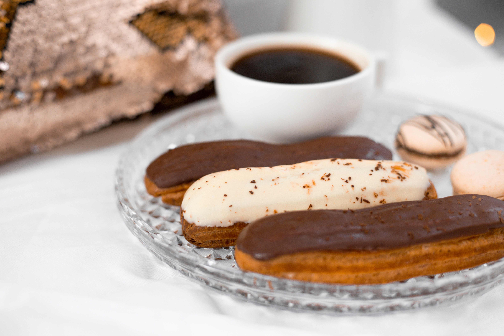

Ekler Tarifi

Malzemeler
- 100 gram tereyağı(7 yemek kaşığı)
- 1 tatlı kaşığı toz şeker
- 1/4 çay kaşığı tuz
- 1 su bardağı su
- 1 paket vanilin
- 4 adet yumurta
- 1 su bardağı (2 yemek kaşığı fazla)un
Krema Dolgusu için:
- 3 su bardağı süt
- 1 adet yumurta sarısı
- 3 silme yemek kaşığı un
- 2 silme yemek kaşığı buğday nişastası
- 6 yemek kaşığı toz şeker
- 1 yemek kaşığı tereyağı
- 1 paket vanilin
- 1 paket krem şant
Çikolata Sosu için:
- 200 gram çikolata (bitter veya sütlü)
Yapılışı
- İlk olarak kremayı yapıp soğumaya bırakın. Kremayı bir gece önceden de yapabilirsiniz. O şekilde de nefis olacaktır. Tereyağı, krem şanti ve vanilya hariç tüm malzemeleri derin bir tencereye alın.
- Sürekli karıştırarak kıvam alıp kaynamaya başlayınca tereyağ ve vanilyayı da ekleyin. Güzelce karıştırarak ocaktan alalım. Ara ara karıştırıp soğumasını sağlayın. Soğuyan kremaya toz krem şantiyi ekleyip mikserle karıştırın.
- Üzerini streçleyip buzdolabına kaldırın.
- Ekler hamuru için su ve tereyağını tencereye alın. Bir çimdik tuzu ve şekeri de ekleyin. Tereyağ eriyip su kaynamaya başlayınca tencerenin altını kısıp unu ekleyin. Sürekli karıştırarak pürüzsüz bir kıvam almasını sağlayın. Tencereye yapışmayan bir hamur olunca altını kapatıp soğumaya bırakın.
- Soğuyan hamura yumurtaları teker teker ekleyerek mikserle karıştırın. Hamuru sıkma torbasına alın.
- Yağlı kağıt serili fırın tepsisine belli arkalıklarla istediğiniz büyüklükte hamuru sıkın.
- Önceden ısıtılmış 180 derecelik fansız ayar fırında 40-45 dakika pişirin.
- Pişen eklerleri hemen fırından almayın yarım saat kadar fırın içinde beklesin.
- Çikolatayı benmari usulü eritin.
- Soğuduktan sonra bıçak yardımıyla eklerleri ikiye bölün,
- İçerisine kremayı sıkın ve üzerini kapatın.
- Eklerlerin üst kısmını eriyen çikolataya batırıp antep fıstığıyla süsleyin. Eklerlerimiz hazır, afiyet olsun.